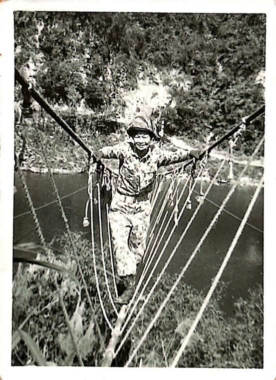
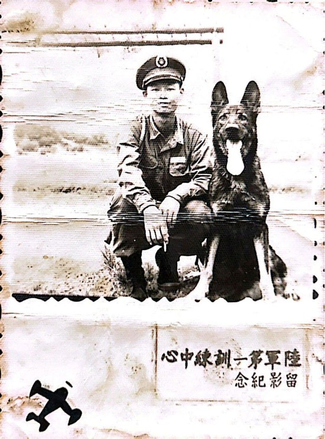
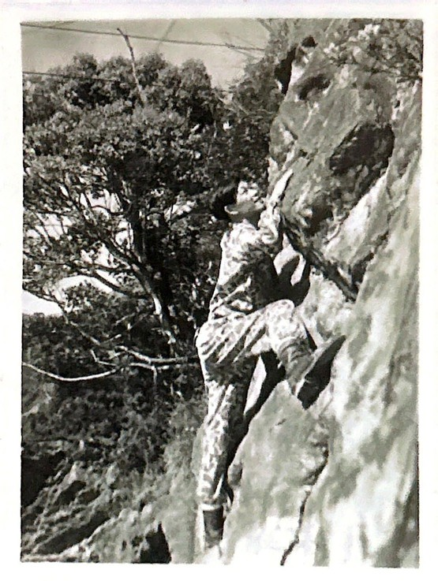
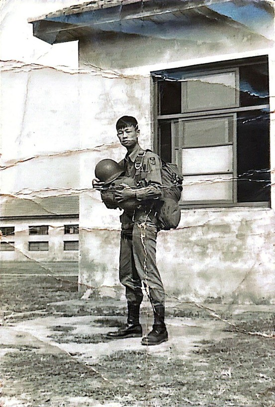
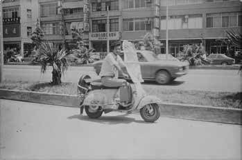

紀文豪隨部隊遷入石碇進行山訓，拍攝於鷺鷥潭
退伍前夕，紀文豪仍不斷收到臨時教育召集令，真正踏入社會的時間一再延後。距離退伍只剩半年時，他終於正視現實：沒有背景、沒有資金，能依靠的只有自己。

紀文豪初入伍時，身穿軍裝留影紀念
退伍後，他進入精工研磨公司，從最基層的業務員做起。跟著前輩學製程、騎車拜訪工廠找訂單，初期屢屢碰壁，卻沒有退縮。三個月後，他逐漸能與客戶建立信任。
一次為處理急件而親自操作機台，砂輪爆裂擊中腿部，未釀成大禍，也讓他對風險與責任有了切身體認。

紀文豪在小格頭山訓
之後轉任國洋公司，開發新產品與市場，初期業績低迷，承受極大壓力，仍咬牙撐過。家族事業曾邀他加入，他選擇婉拒，避免親情與工作混淆，寧願獨自承擔風險。

紀文豪於屏東大武營受特戰跳傘訓練。
首次創業資金拮据，甚至請親人擔保，石油危機，市場急凍，最終拆夥收場，貸款仍須償還。 失敗後，他重新檢視方向，轉做印刷電路板貿易，一度見到轉機，卻因客戶的人事變動而改變政策再度中斷。

一九七○年代創業初期，紀文豪經常騎著這台偉士牌機車四處做銷售
接連挫折後，他投入玻璃纖維浴缸製造，成立錦豪實業，從製程、品質到人員管理全數重新學習。
同時加入獅子會，拓展視野，也調整心態。多次跌倒與重來，讓紀文豪先生逐步累積實力與抗壓能力，低谷成為他繼續向上的起點。
退伍後，紀文豪先生從基層業務員做起，雖然經歷過砂輪爆裂的驚險意外，以及首次創業在石油危機中受挫的打擊，但他從未放棄在商場上站起來的決心。 他在印刷電路板貿易與玻璃纖維浴缸製造等不同領域中反覆嘗試，雖然因外部環境與供應鏈變動而未能長久，卻也因此累積了豐富的市場應變經驗。正當他在事業低谷中尋找新方向時，兒時玩伴陳廷輝的出現帶來了轉機，兩人決定投入當時正興起的溜冰鞋產業，正式開啟了「緯豪」的成長篇章。